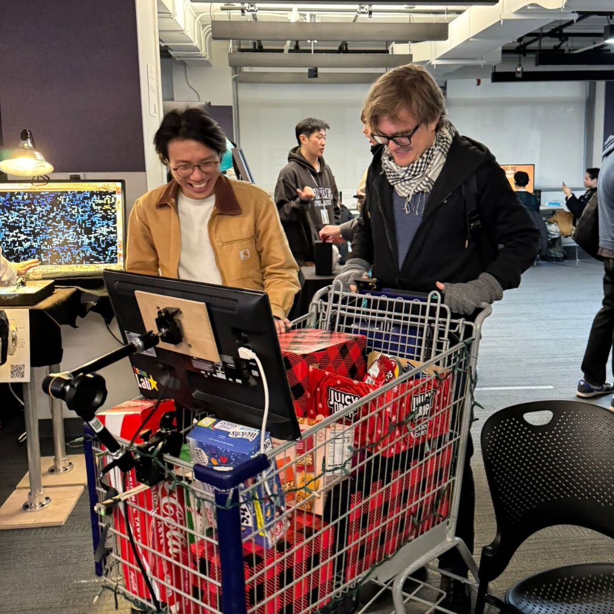
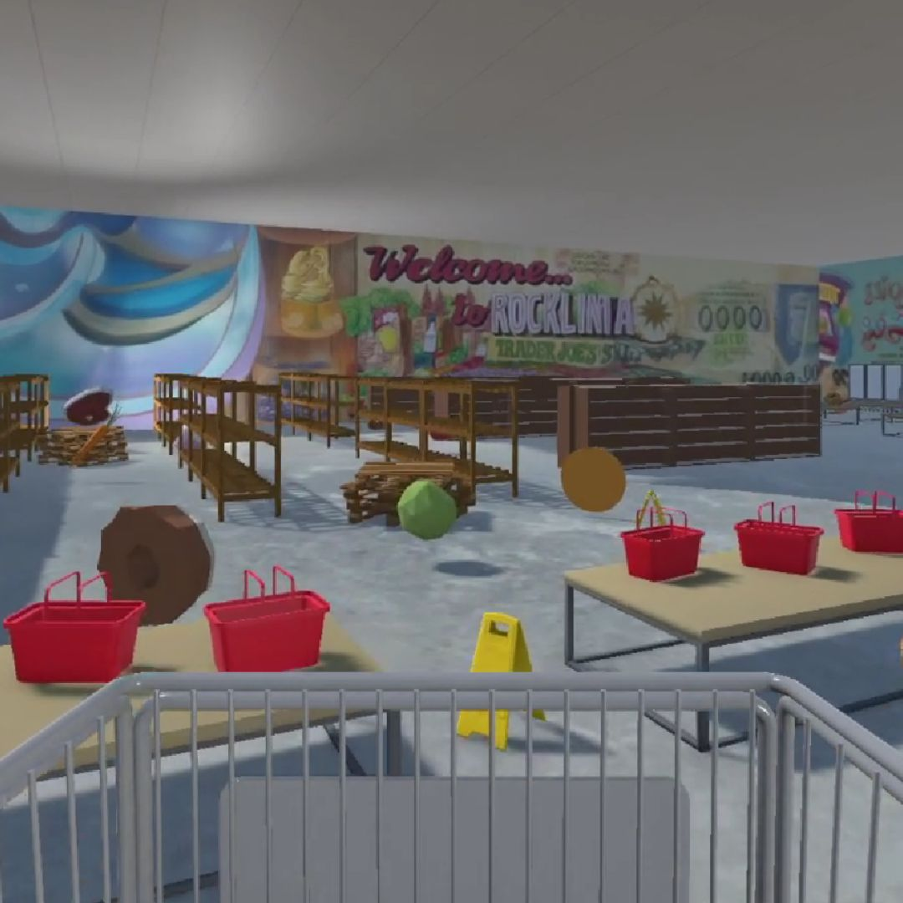
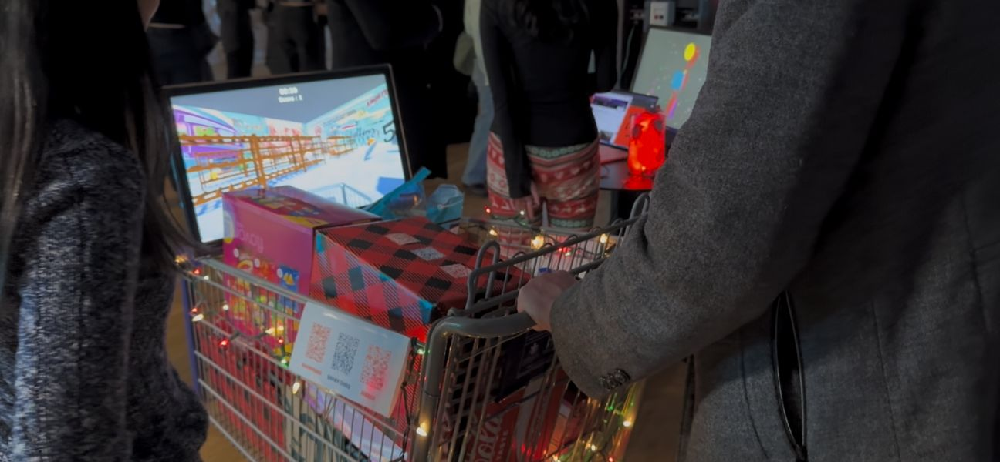

Shawn Zheng
The evolution of shopping, from physical stores to online platforms, seems to have stalled. Are there new interactive possibilities? As a grocery shopping enthusiast, Shawn, alongside his teammate Duban, explores this question through a game experiment. By combining a virtual mall with a physical shopping cart, Shopping Maniac reimagines how we interact with shopping spaces.
  Hall effect sensors detect signals as magnets on the cart's wheels pass by during movement. These signals are transmitted to Arduino, enabling real-time tracking of cart motion. The data syncs with Unity, where the cart's movement is visualized. In Shopping Maniac, players score by collecting food, smashing objects, and maximizing points within a time limit.